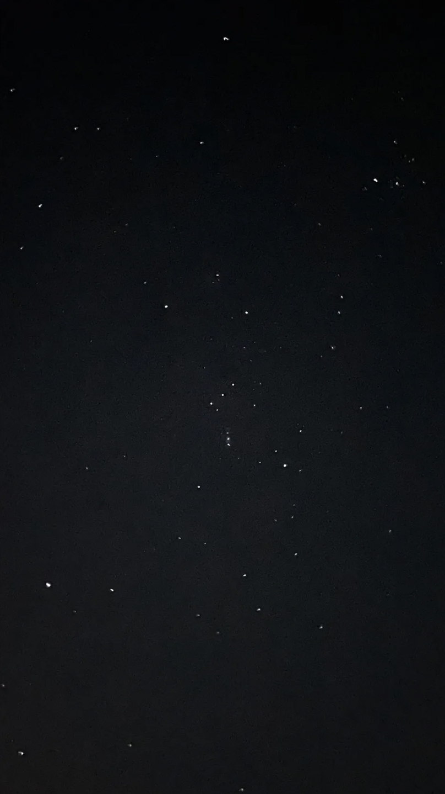

と が った。 いやなんか、 、 、 、いや 、 けど 、 からさ。しかも ？ ね。なんか 。まあでも「 ？」って が いたら「 」って が って、 のね。なんか ーって ら 、 してさ。うわー 。むしろ ？とか んだけど、 に 、 ら「 、 かな。 って ったの。」って が ったの。「 」って った。だって、 。 、 。ただ ということが みたいな感じ。 って、 って。 あと なんだけど、 っていう ？みたいなやつに 、その なんだけど、 → → って感じで て、 だと だったっていうのは 。 から 。 ーーー、って。思った。 は なんだけどねー。なんか と わ。 。 わ。てかなんで に が っ！ ！めっちゃなんか じゃんか わ。てか は で、その分 けれども、それだったら よみたいな、でも からうわーなんかちょっとほんと て、 から きたから わ。